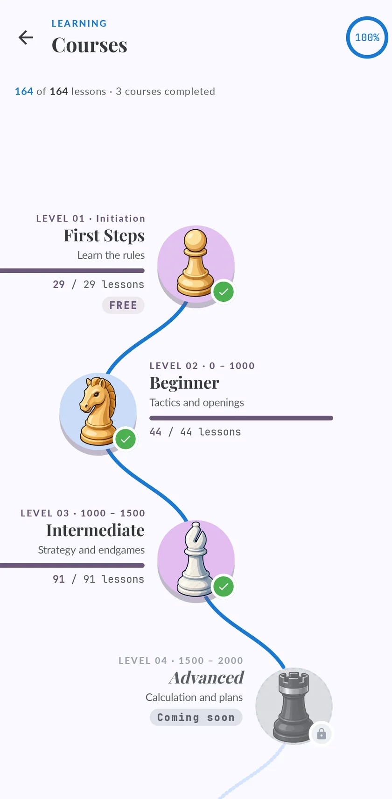

Learn chess from scratch, one lesson at a time
A course on your phone that starts with how the pieces move.

Four courses, from the rules to past 2000
The courses follow one path.
| Course | For | What you learn | Lessons |
|---|---|---|---|
| First Steps | Complete beginners | How the pieces move | 29 |
| Beginner | Up to 1000 | Basic tactics | 44 |
| Intermediate | 1000 to 1800 | Strategy | 91 |
| Advanced | 1500 to 2100 | Calculation | 139 |
What the lessons are made of
The lessons mix several kinds.
- A short piece of theory.
- Puzzles on that idea.
- Openings to learn.
- Endgames.
- Games against bots.
In the Intermediate and Advanced courses, some sections open after you play an online game.
Why a course and not just puzzles
Puzzles train what you already know.
What is free
The whole First Steps course is free.
Questions
Can I learn chess on my own with an app?
Yes, as long as the app gives you an order to follow.
How long does it take to learn chess?
The rules take an afternoon.
Is it good for children?
It starts from zero and has no ads.
Does it work on iPhone and Android?
Yes, on iPhone, iPad and Android.